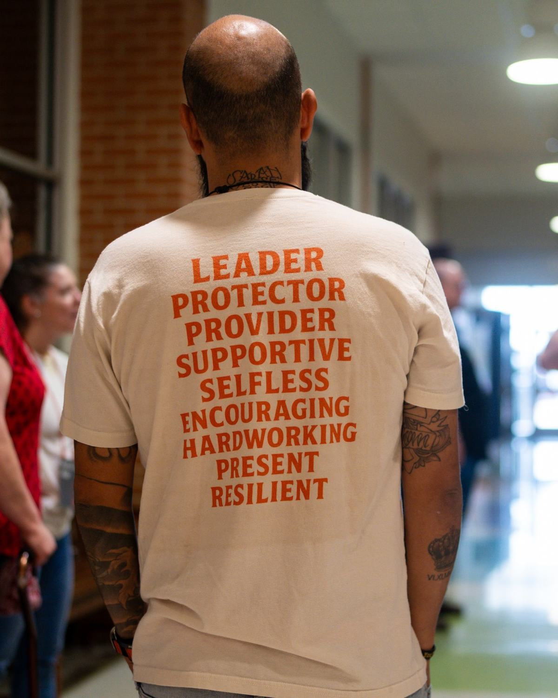

A place you can stop pretending.
No relationship with Jesus? Bad relationship with the Church? Come check us out.
Sundays at 10am
Camacho Elementary — 501 Municipal Dr, Leander, TX 78641
Someone will be there to point you to guest parking, and someone else will walk you in from there.

The music's loud enough that nobody will hear you sing.
No crap coffee.
A lot of us have tattoos. Including people on the stage.
You don't have to know anything to follow along.
Show up.Find a seat.Try it out.
Your kids will beg to come back.
Have fun.Games, friends their own age, and an environment built for them.
Stay safe.Every volunteer is background checked. You get a tag, your kid gets the same tag,
and nobody else can pick them up.
Meet Jesus.Worship with other kids their age and a Bible teaching that actually makes sense to
them.
Watch Mari’s story
Her story mattered. So does yours.
Hear it from her.